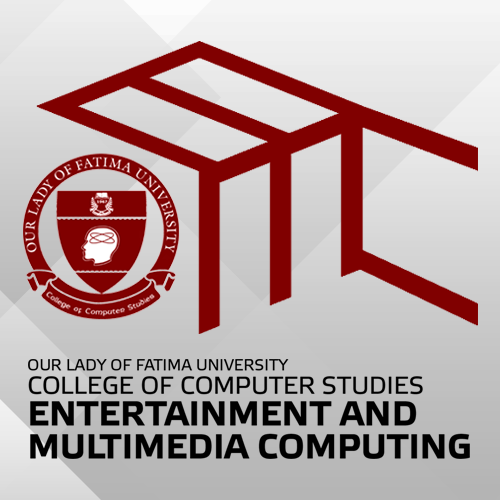
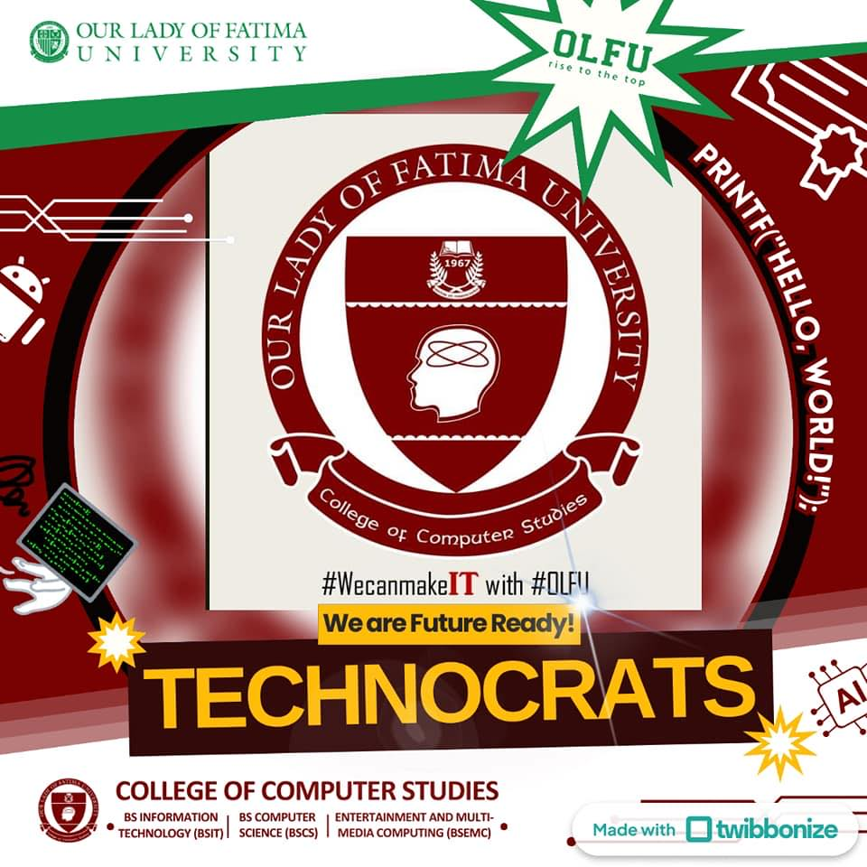

Mr. David D'angelo Jr.
CMC Adviser - Faculty
About CMC
Arcane threads of purpose, craft, and community bind the consortium together.
We are the Creative Minds Consortium, under the Fatima Computing and Multimedia Society (FCMS) of OLFU.
Vision: A vibrant, interconnected BSEMC community where creativity, culture, and collaboration thrive.
Mission: Uniting the guilds Laraw, Likha, Himig, and Sinag to foster skills, cultural enrichment, and student engagement.
Our Values: Leadership, Innovation, Kindness, Harmony, Ambition
We are creators, performers, musicians, and storytellers—bridging passion and growth, and building a legacy of artistic excellence.
Leadership & Faculty
CMC Adviser - Faculty
President
Vice President
Secretary
Auditor
Mission & Vision
Vision of CMC: CMC is dedicated to enhancing the campus experience for students in the BSEMC, BSIT, and BSCS programs by uniting the Laraw, Likha, Sinag, and Himig guilds. We focus on expanding student immersion through innovative and student-oriented events that foster cultural enrichment, skills development, and community engagement.
Mission: CMC envisions a vibrant and interconnected CCS community where students thrive through active participation, cultural exploration, and collaborative growth.
Our goal is to cultivate a dynamic environment that not only enriches the academic and personal experiences of our members while contributing to a legacy of creativity and excellence within the campus.
Core Values
Empowering students to take initiative, inspire others, and drive positive change within the CCS community.

Encouraging creative thinking and the development of unique solutions to enhance student experiences and events.

Fostering a supportive and inclusive environment where every member feels valued and respected.

Promoting collaboration and unity among the Laraw, Likha, Sinag, and Himig Guild to achieve common goals and enrich the campus culture.

Striving for excellence and continuous improvement in all endeavors to contribute meaningfully to the academic and personal growth of students.
Organizations & Commitments

BS Entertainment and Multimedia Computing (EMC) is a dynamic degree program focused on creating digital content for today’s media-driven world. It blends technology, creativity, and storytelling—covering areas like graphic design, animation, video production, game development, and interactive media. Students develop both technical and artistic skills to produce engaging multimedia experiences for entertainment, communication, and digital innovation.

College of Computer Studies (CCS) is an academic division dedicated to developing future-ready professionals in the field of computing and information technology. It offers programs focused on programming, software development, data management, and system design, equipping students with strong technical foundations and problem-solving skills to thrive in the digital world.
CMC
Creative Minds Consortium (CMC) is a student-led organization that brings together individuals passionate about creativity, media, and digital expression. It serves as a collaborative platform where members can showcase their talents, develop their skills, and participate in projects and events related to multimedia, design, storytelling, and technology. CMC fosters innovation, teamwork, and artistic growth within the community.
Location Details
St. Benedict Hall, Our Lady of Fatima University, Tamaraw Hills, Valenzuela, Philippines